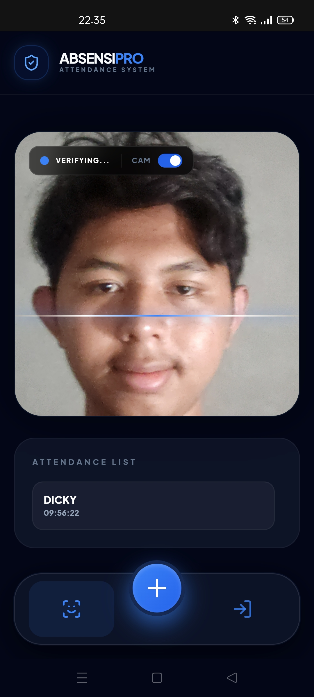
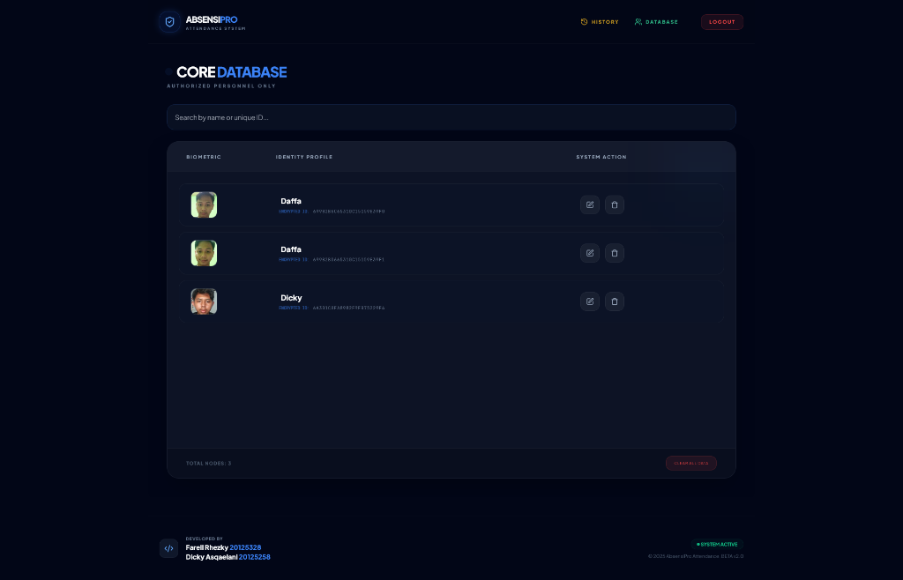
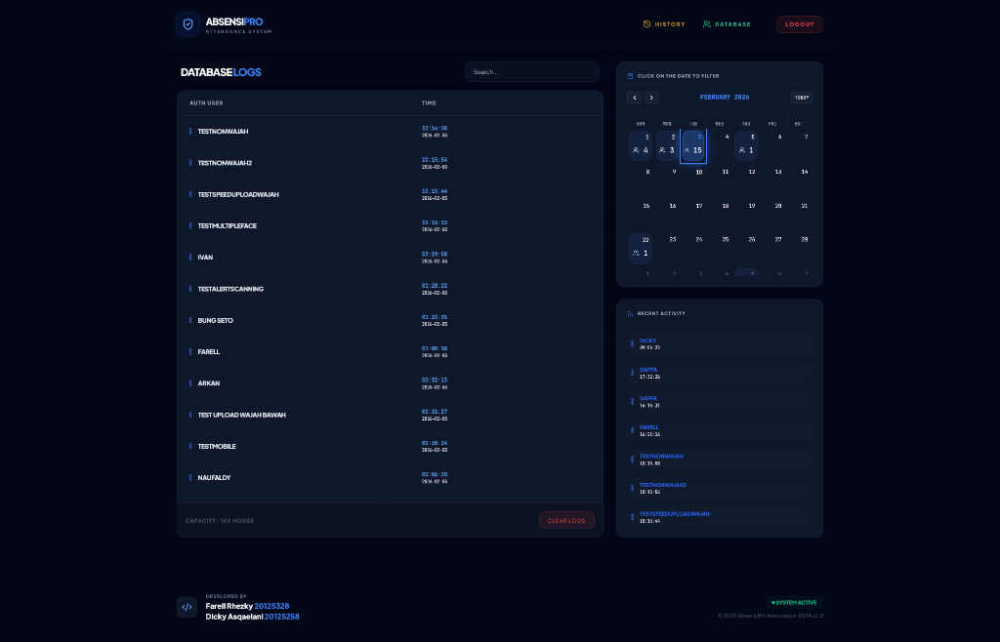
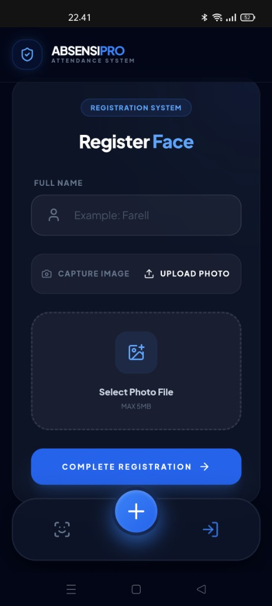

AbsensiPro
AI-powered face recognition attendance system with real-time biometric verification and dark glassmorphism interface.

Challenge
Attendance in our class was still done manually — a slow, error-prone process that depended entirely on paper or verbal roll-calls. As a student who works with AI, I saw an opportunity to solve this real, everyday problem using computer vision. The goal was to replace the manual process entirely with a biometric system that any webcam could power, with no extra hardware needed.
What I built
In this 2-person group project, I took on the role of AI Engineer. I trained a facial recognition model to capture and store a 128-dimensional embedding of each user's face at registration, then measured the similarity between that baseline and the face presented during live scanning. I then integrated this AI model into a web platform and led the full deployment pipeline — from testing and debugging to pushing it into a production-ready server environment.
Impact
The system transformed our classroom's attendance process from manual and fragmented to automated and modern. Lecturers could monitor attendance in real time through a cloud-synced dashboard, and the biometric verification layer reduced the possibility of proxy attendance. The project demonstrated that a small, focused team can create tools that make a real difference in the learning environment around them.
What I learned
Beyond the technical skills, this project taught me the value of team management and cohesion. Working in a small team meant that every decision mattered — and keeping our collaboration tight and our communication clear was just as important as writing good code. I learned that the best solutions come not just from individual capability, but from a team that stays aligned in solving the problems around them.
System Interface & Showcases


